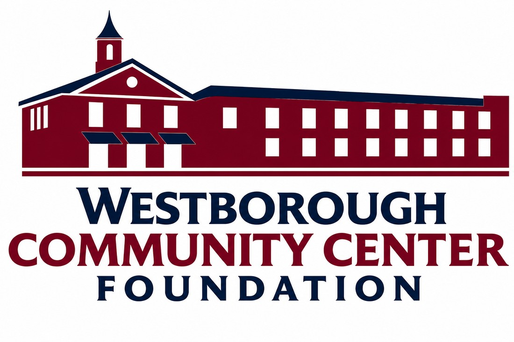

The Westborough Community Center Foundation (WCCF, a 501(c)(3) nonprofit) raises awareness and financial support to renovate and sustain the Westborough Community Center — transforming it into a vibrant, inclusive, intergenerational hub where people of all ages connect, learn, and thrive for generations to come.
Support Westborough's new Community Center including the Active-Living Senior Center with a tax-deductible donation today.
The Westborough Community Center Foundation (WCCF) will help raise funds for the new Community Center in Westborough MA — a modern, welcoming intergenerational space where residents of all ages can learn, connect and thrive. Every gift helps create a healthier, more vibrant Westborough for today and generations to come.
WCCF is a 501(c)(3) nonprofit organization created by community leaders to raise capital funds for Westborough's new Community Center, featuring an Active-Living Senior Center, recreation area, and pool in a renovated Town building. WCCF is independent from the Town — donations supplement, and never replace, Town-funded programs and services.
When you give to WCCF, you are making a tax-deductible investment in the future of Westborough. Please consult your tax advisor regarding the deductibility of your contribution. A receipt will be provided for all donations.
Every contribution — large or small — brings Westborough's new Community Center closer to reality. Click the donate button below to give today.
Make checks payable to:
Westborough Community Center Foundation
P.O. Box 72
Westborough, MA 01752
A Westborough resident and retired C-level executive and nonprofit leader with more than 30 years of experience in business development, marketing, fundraising, and strategic leadership. Her executive roles include International Data Group (IDG) and other national technology and healthcare media companies, where she helped drive growth through innovative marketing, partnerships, and business strategy.
A Westborough resident and community advocate dedicated to strengthening connections and enhancing quality of life for residents. As Co-President of the Westborough Community Center Foundation, she helps guide efforts to create a new Community Center, including an Active Living Senior Center that will serve Westborough for generations. Mirtha is a results-driven professional with extensive experience in account management, project management, and client relations, including leadership roles at a Fortune 500 corporation managing large-scale client relationships and complex system implementations.
A 20-year resident of Westborough, Sara has deep roots in the community through school parent groups and local committees. She served two terms on the Westborough School Committee, including two years as Chairperson, and continues supporting youth and education as a board member for the Westborough Education Foundation and Project Graduation. Sara is Co-founder and Race Director of the annual Westborough Turkey Trot and volunteers with Westborough Connects and the Westborough Appalachia Service Project (ASP). Today, she's focused on helping the Westborough Community Center become a vibrant, multi-generational space for residents of all ages.
A longtime Westborough resident and community volunteer with a strong record of civic engagement and public service. As Treasurer of the Westborough Community Center Foundation, Dee helps lead efforts to create welcoming, accessible community spaces for residents of all ages. She brings 40 years of banking and finance experience, most recently as personal executive assistant to two multi-millionaires, and currently serves on the Westborough Advisory Finance Committee.
A dedicated community leader and civic volunteer in Westborough, Massachusetts. Maureen serves as a Board Member of the Westborough Community Center Foundation, Chair of the Westborough Housing Authority Board, and Treasurer of the Westborough Cultural Council. She's also Chair of the College of the Holy Cross Parents Council and a member of its President's Council. Her career spans decades in financial services, including roles at Fidelity Investments and Charter Research/Standard & Poor's, where she served as Vice President of Operations and Client Services. Maureen brings a proven track record in local fundraising to every organization she supports — and, as she'll tell you, she's Sara's partner in crime in all things Westborough.
The Westborough Community Center Foundation (WCCF) is a 501(c)(3) nonprofit dedicated to keeping the Westborough Community Center strong, modern, and welcoming for everyone. We hope to raise some of the resources needed to renovate and sustain the facility, support essential programs, and ensure this vital gathering place continues to serve Westborough, MA for generations.
The Westborough Community Center Foundation (WCCF) raises awareness and financial support to renovate and sustain the Westborough Community Center — transforming it into a vibrant, inclusive, intergenerational hub where people of all ages connect, learn, and thrive for generations to come.
A strong Community Center strengthens the entire town. It's where people come together — to learn, stay active, find support, and feel connected. Your generosity keeps this shared space thriving, ensuring Westborough remains a welcoming, healthy, and engaged community for everyone, now and for generations to come.
Stay up to date on the latest developments for Westborough's Community Center including the Active-Living Senior Center phase.
Interested in learning more, volunteering, or discussing major gift opportunities? We'd love to hear from you.
Westborough Community Center Foundation (WCCF)
P.O. Box 72, Westborough, MA 01752
Evilee Ebb, Co-President | Mirtha Leslie, Co-President
Sara Dullea, Secretary | Dee Angelakis, Treasurer | Maureen Johnson, Director
Westboroughcommunitycenterfoundation.org
Info@westboroughcommunitycenterfoundation.org
Follow us on Facebook
The Westborough Community Center Foundation (WCCF) is a 501(c)(3) nonprofit organization.
Donations are tax deductible under IRS regulations.